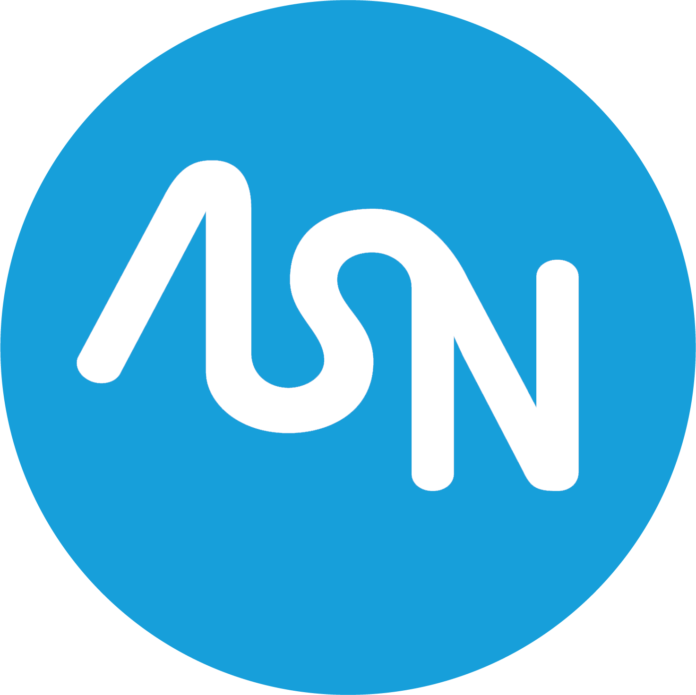

2021 - 2024 • Nozay, France
Alcatel Submarine Networks (ASN)
I'm working for ASN following my block release training. My assignment in the company is to work on the intranet of the Research & Development LNS group, by improving it, create new functionalities, etc. in order to make work easier for everyone in the LNS group
HTML CSS Bootstrap JavaScript JQuery AJAX WebSockets PHP MySQL
2021 • Les Ulis, France
S.T.I.C.
A two-month summer job in the company. I prepared radio transmission bays for highway radio. It also allowed me to discover the world of work and to learn how to work in a team.